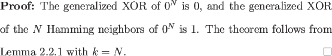
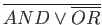
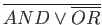

To see how simple proofs can be with Lemma 2.2.1 we provide an example. Generalized XOR is the N-bit Boolean function that is 0 if and only if its input bits are all the same.

This lower bound is asymptotically tight: Beals et al. provide
O( ) oracle query algorithms for computing the AND or OR of
N bits in the bounded error setting [2], and the
generalized XOR of N bits is just
. Unfortunately, Ambainis' Theorem does not always
perform this well, as we demonstrate in the next two sections.
) oracle query algorithms for computing the AND or OR of
N bits in the bounded error setting [2], and the
generalized XOR of N bits is just
. Unfortunately, Ambainis' Theorem does not always
perform this well, as we demonstrate in the next two sections.